Algunos consejos para sobrevivir al NaNoWriMo
Sun, 27 Nov 2011 07:00:30 +0000
Aunque aquí en España su seguimiento sea más limitado, el proyecto NaNoWriMo, aquel por el que miles de personas se ponen a escribir como locos durante el mes de noviembre, tiene una popularidad tremenda en el mundo anglosajón. Tanto, que algunas páginas web se han dedicado a ofrecer consejos o guías para ayudar a los [...]
Aunque aquí en España su seguimiento sea más limitado, el proyecto NaNoWriMo, aquel por el que miles de personas se ponen a escribir como locos durante el mes de noviembre, tiene una popularidad tremenda en el mundo anglosajón. Tanto, que algunas páginas web se han dedicado a ofrecer consejos o guías para ayudar a los autores, como es el caso de Galleycat, que ofrece un consejo diario a lo largo del mes (y en este enlace podréis encontrar, además, los treinta consejos del año pasado). Muchos de estos consejos enlazan a otras páginas web que ofrecen todo tipo de recursos para el proyecto, desde encuentros sociales para realizar carreras mecanográficas, foros enciclopédicos muy útiles para documentarse, grupos de chat donde los propios participantes se animan (o empujan) a seguir escribiendo, o incluso una hermandad de World of Warcraft compuesta exclusivamente de participantes de NaNoWriMo. En cuanto a participantes hispanohablantes, Yolanda González Mesa ofrece 10 interesantes consejos en su blog Tinta al sol, de los cuales podríamos destacar el preparar la labor de documentación el mes anterior, o la necesidad de recompensarte, una vez alcances tu objetivo final (los de Galleycat van más allá, insistiendo en una recompensa cada vez que cubras determinado número de palabras). Algunos de los consejos más “tramposos” y divertidos aparecen en el blog Vel Anima, que nos insta a luchar contra el bloqueo introduciendo zombies, piratas, ninjas y vampiros, o matando personajes (sobre todo que ahora George R. R. Martin parece haberlo puesto de moda), y que aconseja inflar el número de palabras utilizado a base de nombres de personajes o lugares inusualmente largos o descripciones meticulosas de escenas y paisajes.
Uno de los consejos más llamativos, y que suele aparecer, una y otra vez, es el de no corregir o editar. Nos encontramos, una vez más, con el gran defecto del NaNoWriMo, la falta de calidad que suele acompañar a la escritura rápida. Una novela de 50000 palabras, de escribirse en la tacada de treinta días, necesitaría una revisión y edición laboriosa. Aunque es cierto que los profesionales aconsejan escribir del tirón y dejar la edición para luego, una gran mayoría de estas novelas se presentan al concurso NaNoWriMo sin ningún tipo de repaso o corrección, no por falta de ganas, sino simplemente por falta de tiempo. A pesar de su valía como ejercicio de disciplina y para crear hábito, uno no puede dejar de preguntarse, un año más, si escribir sin orden ni concierto servirá, en realidad, para producir una buena obra literaria. Ante esto, tiene una inspiradora respuesta la escritora Elif Batuman, que ganó el premio Whiting en la categoría de no ficción en 2010; Batuman asegura que el tiempo que se emplea en escribir nunca es desperdiciado y que todos tenemos cierta cantidad de escritura mediocre que tenemos que sacarnos de dentro para poder empezar a producir textos en condiciones. Sea como sea, NaNoWriMo fomenta la cantidad sobre la calidad, en un esfuerzo por abandonar una autocrítica demasiado restrictiva y avanzar en el abrasivo camino de la escritura diaria. Su consejo más importante es el siguiente: Escribe. Escribe. Escribe.
El libro de El Mundo Today
Fri, 25 Nov 2011 07:01:02 +0000
The Onion es una publicación satírica estadounidense fundada en 1988 que en la actualidad cuenta tanto con un diario en papel (con una circulación cercana al medio millón de ejemplares por número) y con una popular página web. The Onion lleva, pues, más de veinte años riéndose de la actualidad y lanzando noticias que, aunque [...]

The Onion es una publicación satírica estadounidense fundada en 1988 que en la actualidad cuenta tanto con un diario en papel (con una circulación cercana al medio millón de ejemplares por número) y con una popular página web. The Onion lleva, pues, más de veinte años riéndose de la actualidad y lanzando noticias que, aunque son falsas, pueden pasar en determinados momentos por reales. En España tenemos una publicación parecida, por ahora simplemente on-line, El Mundo Today, que ahora se ve trasplantada por primera vez al papel, aunque no en forma de diario, como The Onion, sino de libro recopilatorio.
Los creadores de El Mundo Today son Xavi Puig y Kike García, que reconocen que no conocían The Onion cuando empezaron su andadura con su primer proyecto conjunto, Espongiforme, una web de humor. Por entonces eran estudiantes de Filosofía, y al dar el salto a Comunicación Audiovisual lo que hoy es El Mundo Today cristalizó tras la elaboración de un falso programa de noticias. Porque eso es básicamente lo que se hace en esta página web: con una estructura idéntica a los sitios de los diarios convencionales, crear una serie de noticias falsas de corte humorístico.
Parece mentira que titulares como “Rubalcaba busca el voto en el modo multijugador del Call of Duty”, “Cientos de españolas votarán lo que digan sus maridos” (complementado con un descacharrante “El 53% de las viudas votará lo que diga José Coronado”) o “Conejos adiestrados harán de recogepelotas (en tenis)” puedan confundir al lector despistado y hacerle pensar que se encuentra ante una noticia genuina, pero la realidad es que tanto en El Mundo Today como en The Onion las anécdotas al respecto son cientos. En The Onion, por ejemplo, fue muy sonada una noticia de 1998 en la que se informaba sobre el supuesto proselitismo que los homosexuales estadounidenses estaban llevando a cabo para “reclutar” a jóvenes heterosexuales, así como otras noticias aún más sorprendentes como el cabreo de Sean Penn con el usuario que había registrado la cuenta de correo SeanPenn@gmail.com (noticia recogida como verdadera por un medio de comunicación danés), las declaraciones de Neil Armstrong reconociendo que la llegada del hombre a la luna fue un fraude (que fueron publicadas como auténticas en la prensa de Bangladesh) o la elección del director danés Lars Von Trier para realizar spots publicitarios para fomentar el turismo a Dinamarca, noticia esta última que fue publicada como tal por un diario tan prestigioso como el italiano Il Corriere Della Sera.
El Mundo Today también ha podido “colar” noticias ficticias en medios de comunicación serios; de hecho, Puig y García tienen sendos programas en dos cadenas de radio de difusión nacional, y reconocen que al menos a uno de ellos accedieron tras “engañarles”. Nótense las comillas, porque es obvio que ni The Onion ni El Mundo Today tienen como primera intención el engañar al público o a otros medios de comunicación, aunque seguramente no les será indiferente cuando esto ocurre. Después de todo, es divertido comprobar los comentarios indignados que los visitantes dejan en la web de El Mundo Today cuando se creen una noticia del tipo “Facebook te alertará cuando tu ex sea más feliz que tú” o “Movistar cobrará las llamadas al interfono”.
The Onion, hasta la fecha, ya ha visto publicados diez volúmenes recopilatorios con las mejores de sus noticias. Esperemos, por el bien del sentido del humor español, que El Mundo Today tenga al menos tanta suerte como ellos.
Jane Austen… ¿asesinada?
Wed, 23 Nov 2011 06:59:08 +0000
Mucho se ha teorizado sobre la temprana muerte de la escritora inglesa Jane Austen, allá por 1817. Algunos aseguran que se trataba de algún tipo de cáncer, de la enfermedad de Addison o incluso de lupus. Austen murió con 41 años, una edad joven incluso para la época, y mucho se ha escrito sobre las [...]
Mucho se ha teorizado sobre la temprana muerte de la escritora inglesa Jane Austen, allá por 1817. Algunos aseguran que se trataba de algún tipo de cáncer, de la enfermedad de Addison o incluso de lupus. Austen murió con 41 años, una edad joven incluso para la época, y mucho se ha escrito sobre las posibles razones de su fallecimiento. Ha sido la autora Lindsay Ashford, conocida por sus novelas de corte policiaco, quien ha ofrecido una muy convincente hipótesis al respecto: el arsénico.
Ashford, que se mudó al pueblo de Austen, Chawton, hace ya tres años, ha estado inspirándose en la casa del hermano de Jane, Edward, para escribir su última novela, una obra de suspense basada en la muerte de la escritora. Leyendo las cartas de Jane, Ashford descubrió un dato interesante. Austen escribe “ I am considerably better now and am recovering my looks a little, which have been bad enough, black and white and every wrong colour” (Ahora me encuentro bastante mejor y empiezo a recuperar mi color, que ha estado muy mal, negro y blanco y todo tipo de tonos erróneos). Esto sugiere que la escritora tenía manchas negras y blancas en la piel, un síntoma del envenenamiento por arsénico. Ashford siguió investigando, y descubrió que una pareja estadounidense que había comprado un mechón de pelo perteneciente a Austen, en una subasta en 1948, lo había llevado a un laboratorio para analizar, y que allí habían encontrado restos de arsénico. El oficio de Asford de novelista de género negro le daba una ventaja que otros autores no tenían: un amplio conocimiento de criminología que le había llevado a descubrir estas pistas hasta ahora ocultas, como ha explicado al periódico inglés The Guardian en una entrevista reciente.
Aunque Ashford sugiere el homicidio por envenenamiento, y esto es precisamente de lo que versa su nueva novela, asegura que no es lo más probable. Caben más posibilidades de que Austen estuviera tomando algún medicamento que contuviera arsénico, como la famosa “Solución Fowler”, que se utilizaba para casi todo, incluido el reumatismo, dolencia de la que Austen sufría. La muerte por arsénico era algo habitual en pacientes que utilizaban este tipo de remedios, en una época en la que dicho elemento no se podía encontrar en un análisis forense. Pero parece ser que el asesinato utilizando este método era también bastante común, debido a la imposibilidad de determinar las causas de la muerte. Ashford asegura que para conocer la verdad sería necesario exhumar y examinar el cadáver, algo que levantaría más que ampollas entre los fans de la escritora decimonónica; por ahora nos encontramos con una hipótesis con cierto fundamento, la de la muerte de la escritora por arsénico; lo que no tenemos manera de saber es cómo le fue administrado. Tal vez no sea mala idea esto de poner a escritores de thrillers policiacos a estudiar extrañas muertes de escritores, quién sabe lo que podrían descubrir, sobre todo teniendo en cuenta las sospechosas circunstancias en las que murieron autores como Edgar Allan Poe o Máximo Gorki.
La novela seriada y el modelo freemium (I)
Mon, 21 Nov 2011 08:56:29 +0000
Curiosamente, a pesar de la expansión tremenda del libro en los últimos siglos, la figura del escritor sigue gozando de un prestigio admirable, y la profesión de autor remunerado está, sin duda, muy codiciada. Poder escribir y vivir de lo que uno escribe es una meta cada vez más popular, y ya que quien más [...]
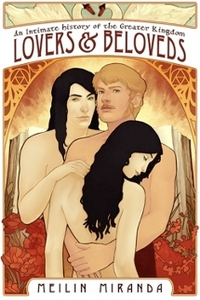
Curiosamente, a pesar de la expansión tremenda del libro en los últimos siglos, la figura del escritor sigue gozando de un prestigio admirable, y la profesión de autor remunerado está, sin duda, muy codiciada. Poder escribir y vivir de lo que uno escribe es una meta cada vez más popular, y ya que quien más y quien menos ha hecho sus pinitos en esto de juntar palabras con intencionalidad estética, cada vez hay una mayor oferta de producción literaria, que sobrepasa con creces la capacidad de las editoriales y de los propios lectores. Y siempre está, por supuesto, el factor de la calidad, teniendo en cuenta que sólo un porcentaje mínimo de estos aspirantes a autor ofrece una plausibilidad comercial que pueda interesar a las empresas de edición, debido a los elevados costes asociados al libro tradicional.
Y esto, claro, está cambiando, en un proceso evolutivo que se antoja infinito. Con la aparición del monstruo comunicativo que es Internet y el crecimiento, por otro lado, del libro electrónico, nos encontramos con vías de salida para la escritura que antes no podrían ni imaginarse. Dentro del proceso de la autoedición, por el que es el propio autor el que edita y controla la salida al mercado de su obra, surgen interesantes ofertas que van más allá de la producción en papel. Ya hemos mencionado en alguna ocasión la existencia, sobre todo en EEUU, de novelas seriadas que se publican de manera periódica en Internet, que obtienen su rendimiento económico a través de donaciones y pagos de los lectores, ansiosos por conocer cómo se desarrollan las historias de estos expertos del folletín. Suele tratarse de obras de corte romántico, erótico o de aventuras, géneros en los que encaja a la perfección el cliffhanger, ese final de capítulo que hará que los lectores deseen avanzar para conocer el desarrollo de la trama, y la elaboración de intrigas épicas con personajes siempre en evolución. Un ejemplo potente es la obra Lovers and Beloveds: An Intimate History of the Greater Kingdom, de Meilin Miranda, que tras un inmenso seguimiento por internet, a través del cual la autora actualizaba de manera periódica la obra (con una sección de pago para poder leer la obra completa), pudo llegar a publicarse en papel gracias a las donaciones recibidas por Crowdfunding (en España contamos para este tipo de financiación colectiva con el proyecto Lánzanos), gozando de unas ventas más que notables. En cualquier caso, en EEUU sigue tratándose de obras cuya finalidad última es verse impresas, mientras que, en otros países, esa concepción del libro comienza a cambiar de una manera mucho más significativa. La gran novedad, y la oferta de un sistema rentable para las tres partes fundamentales implicadas (editorial, escritor y lector), viene de la mano del modelo freemium, que China ha sabido adaptar al mercado literario. De ello hablaremos en la segunda parte de este artículo.
Tres formas de entender el cómic (III): El cómic estadounidense
Sat, 19 Nov 2011 07:00:58 +0000
Es inevitable, cuando mencionamos el cómic estadounidense, pensar en los superhéroes. Y, de cierta forma, sí es cierto que una de las características fundamentales de la historieta en Estados Unidos es la supremacía, a nivel de industria cultural, del superhéroe, y de las dos casas matrices que desde hace décadas han animado el cotarro en [...]
Es inevitable, cuando mencionamos el cómic estadounidense, pensar en los superhéroes. Y, de cierta forma, sí es cierto que una de las características fundamentales de la historieta en Estados Unidos es la supremacía, a nivel de industria cultural, del superhéroe, y de las dos casas matrices que desde hace décadas han animado el cotarro en cuanto a cómic se refiere, Marvel y DC. Por supuesto, al hablar de cómic estadounidense en seguida nos vienen a la mente un puñado de nombres: Stan Lee, por encima de todos, como creador, y personajes como Batman, Superman, Spiderman o los integrantes de la Patrulla X. Pero reducir una realidad tan amplia como es la industria del cómic en ese país a esto es muy simplista. ¿Es Garfield un superhéroe? ¿Lo son Snoopy y el resto de personajes de Peanuts, seguramente la tira cómica más importante del siglo XX? ¿Cómo encajamos a Robert Crumb y su American Splendor o Peter Bagge y su Odio en todo esto? Y, ¿acaso no fue Maus, de Art Spiegelman, el primer cómic en ganar el Pulitzer?
Fueron precisamente Joseph Pulitzer y William Randolph Hearst, los dos magnates de los medios de comunicación de finales del XIX y principios del XX, los que popularizaron, gracias a los periódicos que controlaban, el humor gráfico. The Yellow Kid (1884) fue seguramente la primera serie importante de la historia del cómic estadounidense, y pronto los personajes de las tiras cómicas de los diarios adquirieron un peso importante, hasta el punto de que se desencadenaron luchas entre periódicos por robarle a la competencia tal o cual historietista. La primera agencia de sindicación de tiras nació en 1914 de la mano, como no podía ser de otra forma, de Hearst: estamos hablando del Kings Feature Syndicate, que en la actualidad no sólo distribuye tiras cómicas entre las cabeceras nacionales y locales de los Estados Unidos, sino también columnas de opinión y pasatiempos. Algunas de las tiras distribuidas por la Kings Feature se cuentan entre las más influyentes del siglo XX, como por ejemplo Popeye, Daniel el Travieso, Betty Boop, Flash Gordon, Félix el Gato o Zits.
La Gran Depresión dio un giro dramático a la historieta estadounidense: a las tiras cómicas eminentemente humorísticas se les sumaron las historias de aventuras, con series como Tarzán, Flash Gordon o The Phantom, en lo que sería el anticipo de los superhéroes inmediatamente posteriores: Superman nace en 1938, Batman y el Capitán Marvel en 1939, y el Capitán América en 1941, todos con un cariz patriótico más o menos pronunciado debido a la Segunda Guerra Mundial. Tras la guerra apareció una de las revistas más influyentes, en cuanto a humor gráfico, de la historia del cómic mundial, MAD (1952), pero realmente el cómic estadounidense no entraría en una nueva edad de oro hasta finales de los 50 y gracias a la competencia de Marvel y DC, enfrascadas en una lucha de franquicias antiguas y nuevas que aún hoy está en la mente de todos los aficionados al cómic.
El cómic underground e independiente, que nació en los años 60 al margen de las grandes editoriales y de los consorcios de prensa, se consolidó una década después, y al le debemos auténticas obras maestras del cómic mundial, enfocadas a un público más adulto que el que Marvel y DC consideraban como lector tipo. Sin embargo, incluso los superhéroes acabaron madurando, especialmente a partir de los años 80, y la irrupción de autores como Frank Miller o Alan Moore hizo que el género se reinventara. Casi treinta años después la tónica general de los superhéroes sigue siendo la misma, y nos parecen risibles e ingenuos los guiones de décadas anteriores, cuando Superman y El Capitán América no hubieran podido morir de ninguna de las maneras y Batman todavía no era El Caballero Oscuro.
Tres formas de entender el cómic (II): La bande dessinée
Thu, 17 Nov 2011 07:00:44 +0000
Si hay en Europa un lugar en el que el cómic tiene una consideración especial y es tratado con el respeto que merece, equiparándolo al resto de la producción editorial, ese es el mercado francófono, especialmente Francia y Bélgica. Allí el cómic no es considerado un producto para adolescentes y niños, como parece suceder en [...]
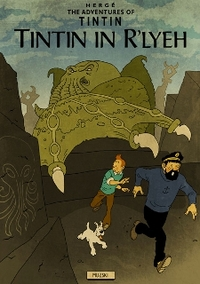
Si hay en Europa un lugar en el que el cómic tiene una consideración especial y es tratado con el respeto que merece, equiparándolo al resto de la producción editorial, ese es el mercado francófono, especialmente Francia y Bélgica. Allí el cómic no es considerado un producto para adolescentes y niños, como parece suceder en otras partes del continente, pese a los evidentes avances gracias a novelas gráficas (esencialmente británicas y estadounidenses) que han dado el salto a los puestos de superventas de las librerías no por méritos propios, sino tras ser llevadas al cine, o al boom del cómic japonés. En Francia, el cómic representa aproximadamente el 10% de la producción editorial, lo que da una idea aproximada de su importancia. Su prestigio también es evidente: en Francia se dice del cómic que es le neuvième art, “el noveno arte”. Sobra hacer más comentarios al respecto.
Más allá de los orígenes medievales de la ilustración francesa, el verdadero inicio fueron las caricaturas políticas de principios del siglo XIX, pioneras en todo el mundo. Hoy día no concebimos un diario de información general que no incluya una serie de viñetas que retraten, de forma más o menos humorística, los temas más destacados del día. Pues bien, al César lo que es del César: es un invento francés que se popularizó rápidamente por todo Occidente gracias a su evidente utilidad.
El cómic francés no adoptó los globos de diálogo en fechas tan tempranas como el estadounidense, y no sería hasta los años 20 cuando se popularizara este artificio narrativo. Fueron precisamente dos historietistas belgas, Alain Sant-Ogan (con su serie Zig et Puce) y Hergé (con el inefable Tintín) los primeros en utilizarlas con éxito. A la vista están sus resultados: aunque fuera del mercado francófono Zig et Puce no es demasiado conocido, Tintín, en cambio, se ha convertido en un referente cultural europeo de primera magnitud. Su reciente paso al cine no hará sino aumentar su leyenda, y seguramente le supondrá el salto definitivo a las estanterías de todo el mundo: porque, si algo hay que decir en contra de la bande dessinée es que, al contrario que el cómic estadounidense y el japonés, que se han exportado al resto del mundo con éxito, el cómic franco-belga, tal vez por sus características netamente europeas o por la importancia que el diálogo tiene en contraposición a la imagen, no ha sabido venderse igual de bien fuera del continente. Al respecto, el aclamado Jean Giraud (creador de, entre otros, El teniente Blueberry, y cuya influencia en cine y televisión ha sido notable) dijo: “el manga llega a Europa, pero el cómic europeo no va a Japón”. Tiene razón Giraud en quejarse, pero no parece probable que este salto vaya a producirse jamás: el cómic japonés prima la imagen sobre el diálogo, pues es un cómic basado en la inmediatez, el consumo rápido, nada que ver con lo que encontramos en el mercado francófono. ¿Cómo podría triunfar en Japón, por ejemplo, cualquiera de las obras de la iraní Marjane Satrapi? Tampoco es popular allí el cómic estadounidense más alejado de los convencionales superhéroes: volúmenes como Maus, de Art Spiegelman, desafían claramente la forma que los nipones tienen de entender el cómic. Sin embargo, el manga sí puede (y, de hecho, lo hace) triunfar en cualquier rincón del mundo: su consumo rápido es totalmente asumible por las nuevas generaciones de europeos y americanos de ambos hemisferios.
Es imposible hablar del cómic franco-belga y, tras mencionar a Tintín y a Hergé, no hacer lo propio con el Asterix de Goscinny y Uderzo, Spirou y Fantasio, Lucky Luke, Los Pitufos, Iznogud o El Corto Maltés, del italiano Hugo Pratt, todos nombres ya legendarios, ya no sólo de la bande dessinée, sino del cómic en general.
Tres formas de entender el cómic (I): El Manga
Tue, 15 Nov 2011 07:00:29 +0000
Tres son los centros mundiales del cómic, y tres son las concepciones, radicalmente distintas y en cierto modo opuestas, de su forma de entenderlo. El cómic estadounidense, el franco-belga y el japonés son los mayoritarios en el mundo, los que más venden, los que más se adaptan a cine y televisión. No hay que circunscribir [...]
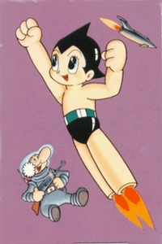
Tres son los centros mundiales del cómic, y tres son las concepciones, radicalmente distintas y en cierto modo opuestas, de su forma de entenderlo. El cómic estadounidense, el franco-belga y el japonés son los mayoritarios en el mundo, los que más venden, los que más se adaptan a cine y televisión. No hay que circunscribir estas tres tradiciones, en todo caso, a un entorno geográfico concreto: se hace cómic “estadounidense” en otras partes del mundo (Inglaterra, por poner un caso), al igual que la bande dessinée no se limita a los países europeos francófonos (su influencia es clara, por ejemplo, en España, Italia o Argentina) y ya ni siquiera el manga es solo japonés.
El manga, que a nivel estético bebe de una tradición de ilustradores que se remonta a los siglos XI-XII, no podría haber surgido sin la influencia de la ilustración satírica europea del siglo XIX. Los primeros mangas propiamente dicho aparecerían a principios del siglo XX, y pertenecerían al género que hoy se denomina kodomo, es decir, el infantil. En pocos años la temática y el público objetivo se ampliaron, convirtiéndose en muy populares los álbumes de historias militares, fieles reflejo de la sociedad japonesa inmediatamente anterior a la Segunda Guerra Mundial. No hay que olvidar que durante los años 30 Japón invadió Manchuria en dos ocasiones, la segunda de las cuales fue el inicio de la Segunda Guerra Chino-Japonesa.
Tras la rendición incondicional de 1945, Estados Unidos prohibió las historias de corte militarista que tanto habían ayudado a la difusión del manga, la mayor parte financiadas por el estado, que las usó como un medio propagandístico más. Sin embargo, el manga se vio fortalecido por la situación precaria del país en la posguerra. También fueron aquellos los mejores años del cine japonés, lo cual es sintomático de una nación que necesitaba ocupar con actividades de ocio un tiempo precioso que les ayudara a evadirse de la vergonzosa y humillante claudicación ante los estadounidenses.
El primer mangaka de esta nueva época fue Osamu Tezuka, que tuvo un éxito sin parangón con la edición de muy baja calidad de su obra La nueva isla del tesoro, que vendió medio millón de ejemplares. Tezuka pasó inmediatamente a la revista Manga Shonen, que había sido fundada en 1947, y se convirtió en el primer mangaka de prestigio gracias a Astroboy. Tezuka fue también un pionero en la animación (Astroboy fue el primer manga que dio el salto a la televisión, lo que se conoce como anime), y ayudó a la diversificación de géneros temáticos (La princesa caballero, otra de sus obras destacadas, es considerada el primer manga shojo de la historia). El kodomo, el manga infantil, dejó de ser el único, apareciendo una serie de mangas agrupados por rangos de edades del público objetivo: a grandes rasgos el manga se divide en kodomo (infantil), shojo (adolescente femenino), shonen (adolescente masculino), josei (adulto femenino), seinen (adulto masculino) y hentai (erótico). Los subgéneros temáticos son muchísimos: desde los populares mecha (de robots) o maho shojo (chicas con poderes mágicos) al yaoi (homosexualidad masculina) o el jidaimono (de ambientación feudal).
En el resto del mundo el shonen y el shojo, sobre todo a través de la animación, fueron los primeros en hacerse populares. En la actualidad el manga es un fenómeno global, y supone un porcentaje altísimo de las ventas de cómics en todos los países del mundo. Aún más, ha supuesto una influencia notable en autores europeos y americanos, tal y como ha ocurrido en Francia con el movimiento La nouvelle manga, o en Estados Unidos con el “amerimanga”, estéticamente japonés pero específico para un público estadounidense. Otro ejemplo de fusión de estilos podría ser el popular cómic canadiense Scott Pilgrim versus The World, cuya estética le debe mucho al cómic japonés.
Entre mafias anda el juego (I): El Padrino
Sun, 13 Nov 2011 07:00:57 +0000
Por alguna razón que se me escapa, en Occidente sentimos cierta fascinación por un fenómeno intrínsecamente italiano como es la Mafia, hasta tal punto que la temática mafiosa constituye en sí misma un género tanto literario como cinematográfico de primer orden. Y de entre todas las manifestaciones y vertientes de la Mafia sin duda es [...]
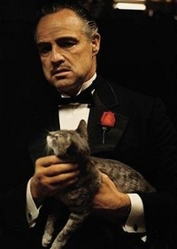
Por alguna razón que se me escapa, en Occidente sentimos cierta fascinación por un fenómeno intrínsecamente italiano como es la Mafia, hasta tal punto que la temática mafiosa constituye en sí misma un género tanto literario como cinematográfico de primer orden. Y de entre todas las manifestaciones y vertientes de la Mafia sin duda es la siciliana, la Cosa Nostra, la que más predicamento tiene entre lectores y espectadores.
No hay que olvidar, sin embargo, que el término original italiano ha sido exportado y adaptado, y hoy día se aplica a organizaciones criminales de todo el mundo, hasta el punto de haberse convertido en habitual oír hablar de mafia rusa, mafia china o mafia japonesa, como si fuera correcto expresarse en dichos términos. Sin embargo, si queremos ser quisquillosos con la palabra, ésta debería reservarse exclusivamente para las organizaciones criminales de origen italiano, y más concretamente las sicilianas, que no son ni por asomo, aunque podamos creer lo contrario, las más importantes de todas. Sin embargo, los puristas opinarán que la mafia siciliana, luego trasplantada a Estados Unidos y otros países con gran cantidad de inmigración italiana, es la mafia por excelencia. A esta concepción errónea ha contribuido enormemente una gran cantidad de literatura y cine generados en las últimas décadas. Y si hay que destacar en ese maremágnum de obras alguna, hay una en particular que se alza por encima de todas, considerándose, sin paliativos, la más importante e influyente: El Padrino.
Cuando hablamos de El Padrino podemos estar refiriéndonos bien a la saga cinematográfica creada por Francis Ford Coppola o a la novela escrita por Mario Puzo. Puzo, neoyorquino de origen italiano, ha pasado a la historia por una novela que sentó las bases en el imaginario popular de todo lo que identificamos con la mafia: organización de origen italiano bien asentada en las grandes ciudades estadounidenses, ramificaciones en todas las conductas criminales imaginables (tráfico de droga, locales de juego ilegal, prostitución, contrabando), código de honor muy estricto, violencia entre clanes, etcétera. Aunque los libros más conocidos del autor son de temática mafiosa, no podemos olvidar que Puzo escribió muchas novelas totalmente distintas, y sobre todo que fue el guionista de las dos primeras películas de Superman.
Sin embargo, El Padrino dejó para siempre marcados a Puzo y Coppola, así como a los dos actores principales de la primera de las tres películas protagonizadas por el clan Corleone, Marlon Brando y Al Pacino (también, en cierto modo, a los secundarios Robert Duvall y James Caan) o al compositor de la banda sonora, Nino Rota. La interpretación de Brando, en especial, ha pasado a la historia, y no es arriesgado considerarla como una de las obras cumbres de la historia del cine, por supuesto recompensada con el Oscar al mejor papel protagonista masculino en 1972 (aunque Brando, en un gesto inaudito, rechazó el premio). La repercusión combinada de la novela de Puzo y la película de Coppola ha creado una actitud mental muy particular acerca de la Mafia, aparte de configurar todo un género que ha sido explotado (y previsiblemente seguirá siéndolo) por parte de escritores y guionistas, además de añadir a nuestro vocabulario términos hasta entonces desconocidos para nosotros como omertà o consigliere.
HispaCon 2011 en Mislata
Fri, 11 Nov 2011 07:02:19 +0000
La HispaCon es una convención dedicada a la literatura de género fantástico -que incluye la ciencia-ficción, la fantasía y el terror- y que cada año visita una ciudad diferente de la geografía española. La naturaleza de la HispaCon viene siempre determinada por el grupo humano voluntario que las organiza, así que un año puede prestar [...]
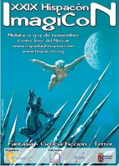
La HispaCon es una convención dedicada a la literatura de género fantástico -que incluye la ciencia-ficción, la fantasía y el terror- y que cada año visita una ciudad diferente de la geografía española.
La naturaleza de la HispaCon viene siempre determinada por el grupo humano voluntario que las organiza, así que un año puede prestar más interés al género de terror, otro a la ciencia ficción o a la fantasía, o bien mantener un escrupuloso equilibrio entre actos dedicados a unos o a otros. Lo cierto es que ya son casi treinta años de reuniones, en las que autores, lectores y editores se dan cita en unos días muy intensos, llenos de presentaciones, mesas redondas y conferencias.
Este año tenemos la HispaCon organizada en Mislata (Valencia) los días 12 y 13 de noviembre, con el nombre alternativo de ImagiCon, debido al grupo detrás del evento -indispensable una lectura a su revista Imaginarios-, en la que tenemos una amplia oferta para los aficionados de género, pero con una especial dedicación a la literatura de fantasía y espada y brujería.
Dentro de los actos tenemos encuentros con autores como Javier Negrete, Susana Vallejo, Manel Loureiro, Laura Gallego o Víctor Conde, entre otros, con mesas redondas tan interesantes como la dedicada al Fantástico para todos los públicos o la dedicada a Canción de Hielo y Fuego, la famosa serie de George R.R. Martin. Todo esto sazonado con juegos de rol y eventos lúdicos de lo más variado, incluyendo un desfile de moda a cargo de Sublime Style y el concierto de la cantante Priscilla Hernández.
Además, el viernes por la tarde habrá un bookcrossing para los que quieran acercarse al centro El Mercat, aunque los actos se realizarán en la Casa Sendra. Una cita obligatoria para los aficionados al género de Valencia y alrededores, que encontrarán una buena oferta de libros seleccionados por varias de las mejores librerías de la ciudad.
Toda la información sobre el evento y sus horarios en el sitio oficial de Espada y Brujería.
Ojos de agua a la conquista sueca
Wed, 09 Nov 2011 06:54:22 +0000
La primera vez que tuve en las manos Ojos de agua fue en la Semana Negra de Gijón, hechizado por los ojos de serpiente del librero de Negra y Criminal. Acababa de salir como novedad de Siruela y me lo vendió a las primeras de cambio. Creo que me lo leí en el hotel, antes [...]
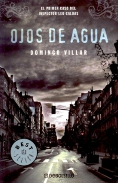
La primera vez que tuve en las manos Ojos de agua fue en la Semana Negra de Gijón, hechizado por los ojos de serpiente del librero de Negra y Criminal. Acababa de salir como novedad de Siruela y me lo vendió a las primeras de cambio. Creo que me lo leí en el hotel, antes de volver de esos días locos de libros, comida y sidra que componen el festival gijonés.
Me encantó. Aunque pecaba un poco de primera novela, tenía varios aspectos en los que mejorar, la verdad es que, un poco harto de tanto investigador extranjero, se agradecía esa calidez que transmitía Leo Caldas. Luego llegó La playa de los ahogados, segunda entrega de las investigaciones del gallego, en la que, también a mi juicio, Domingo Villar consiguió una novela casi redonda.
Pero el ritmo al que funcionan los mercados internacionales no deja de ser curioso. Es ahora cuando Ojos de agua se está haciendo un nombre en Europa y tras sus primeras traducciones ha pasado por ser finalista del Crime Thriller Award en Inglaterra y ahora salta a Suecia siendo finalista a Mejor Novela Negra traducida al sueco en 2010.
No nos engañemos, la noticia es que después de tanta invasión sueca (y noruega y finlandesa y danesa y hasta islandesa) uno de los «nuestros» está dando el paso contrario, remontando el Báltico y colándose en sus propios premios. Eso sí, la competencia es dura, enfrentándose a nombres como Arnaldur Indridason, Reginald Hill o Iain Pears. Con suerte, esa misma fascinación que crean los autores suecos con su país, tan parecido y diferente al nuestro, servirá, esta vez en dirección contraria, para que esa Galicia costera y húmeda se gane el favor del jurado. Y si no es así, no pasa nada, La playa de los ahogados tiene el éxito asegurado el año que viene.
A todo esto, ¿cómo va la tercera novela protagonizada por Leo Caldas? A ver si con tanto viaje y festival nos va a descuidar la escritura. Hasta ahí podríamos llegar. Necesito recetas nuevas, que las de Camilleri llevan todas anchoa.
La cocina de Berasategui y Adriá
Sat, 26 Nov 2011 07:00:34 +0000
Los que son seguramente dos de los popes de las artes culinarias españolas, el hospitalense Ferrán Adrià y el donostiarra Martín Berasategui, ya tienen sendos nuevos libros de cocina. Y en ellos no encontraremos recetas rebuscadas con sonoros nombres, tal y como se podría esperar, sino algo bastante más sencillo. Por una parte está Adrià, [...]
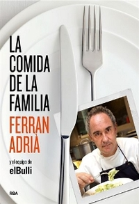
Los que son seguramente dos de los popes de las artes culinarias españolas, el hospitalense Ferrán Adrià y el donostiarra Martín Berasategui, ya tienen sendos nuevos libros de cocina. Y en ellos no encontraremos recetas rebuscadas con sonoros nombres, tal y como se podría esperar, sino algo bastante más sencillo.
Por una parte está Adrià, nuestro cocinero más popular por antonomasia (con permiso de los televisivos Arzak y Arguiñano): a costa de sus deconstrucciones, en especial la de la tortilla de patata, se ha creado toda una comidilla entre la población en general, esa que nunca pensó que acabaría hablando de alta cocina. Pero desde que en 1999 un semanario español se atrevió a colocarlo en portada denominándole como El mejor cocinero del mundo, su fama se ha disparado exponencialmente, y ya no son pocos los que se atreven a asegurar, con o sin razones gastronómicas de peso en la mano, que es el más grande. Lógico: también aparecieron como setas, a la par que se agigantaban las figuras de Fernando Alonso o Rafael Nadal, cientos de miles de expertos en Fórmula 1 y tenis.
Adriá ya posee un interesante título en su haber, una biografía autorizada titulada Reinventar la cocina. El de ahora es diferente, un recetario al uso denominado La comida de la familia. El título no es gratuito, ya que en él se recogen algunas de las recetas que los empleados del restaurante El Bulli preparaban para ellos mismos, para poder afrontar con fuerzas las jornadas de hasta doce horas entre los fogones y la parafernalia casi de ciencia ficción de su cocina. No esperemos encontrar allí recetas complicadísimas, sino 31 menús al uso, un mes completo, de entrante, plato principal y postre. Aunque no sean las famosas deconstrucciones, estos platos sí se rigen por los parámetros de calidad en cuanto a frescura y elección del producto que han guiado a Adriá desde que, siendo un chaval que hacía el servicio militar, siguió la recomendación de un compañero y visitó El Bulli, que ya en los años 80 era un restaurante con cierto renombre, aunque sin duda muy alejado de la fama que ha contado en la última década, cuando él ya era el protagonista indiscutible a nivel de gestión y de elección de platos.
El libro de Berasategui que ve ahora la luz tampoco es el que uno imaginaría, hablando como lo estamos del cocinero español con más estrellas Michelín, la supuesta biblia de la cocina, en su haber (nada menos que siete entre los cuatro restaurantes que por ahora cuenta, ya que existen un par más en camino en el Caribe y al amparo de cierta empresa hostelera). El libro en cuestión se llama Las recetas favoritas de Martín Berasategui, y se centra no en sus recetas de postín, sino en las que él ha preparado en su propia casa a lo largo de los años, lo que él y su familia han degustado.
En el libro, Berasategui repasa sus más de ciento cincuenta recetas favoritas, muchas de ellas con amplias raíces tradicionales, aunque también hay lugar para algunas más novedosas y, llamémoslas así, de tintes étnicos.
Dos buenos regalos navideños, sin duda, para el cocinitas que hay en cada casa, y para sentir por un día que estamos comiendo en El Bulli o en el restaurante del Kursaal de San Sebastián.
Maite Carranza gana el Premio Nacional Infantil y Juvenil 2011
Thu, 24 Nov 2011 07:01:26 +0000
La barcelonesa Maite Carranza ha ganado el Premio Nacional de Literatura Infantil y Juvenil en su edición de 2011 con su libro, escrito en catalán, Paraules emmetzinades (Palabras envenenadas). El premio, que otorga cada año el Ministerio de Cultura, tiene una dotación de 20.000 euros (10.000 menos que el recién instaurado Premio Nacional Taurino, por [...]
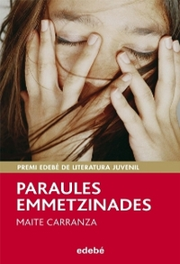
La barcelonesa Maite Carranza ha ganado el Premio Nacional de Literatura Infantil y Juvenil en su edición de 2011 con su libro, escrito en catalán, Paraules emmetzinades (Palabras envenenadas). El premio, que otorga cada año el Ministerio de Cultura, tiene una dotación de 20.000 euros (10.000 menos que el recién instaurado Premio Nacional Taurino, por cierto), y fue creado para galardonar una obra de autor español publicada durante el año anterior en cualquiera de las lenguas oficiales del Estado.
No es la primera vez que una obra escrita en un idioma diferente al español gana este premio en su categoría de Infantil y Juvenil: es la sexta novela en catalán que lo consigue, sumándose Maite Carranza a los autores Josep Vallverdú (1983), el balear Gabriel Janer Manila (ganador en 1988 y en 1994), Emili Teixidor (1997) y Miquel Desclot (2002), aunque en 1989 Andreu Martín y Jaume Ribera lo ganaron con No pidas sardina fuera de temporada, que también había sido publicado en catalán con el título No demanis llobarro fora de temporada. En lengua gallega cuatro han sido los autores ganadores: el lucense Paco Martín (1986), Xabier P. Docampo (1995), Fina Casalderrey (1996) y Agustín Fernández Paz (2008). En lengua vasca, por último, sólo ha habido una novela ganadora: fue en 2003, por lo que tuvieron que pasar nada menos que 25 años desde que se creó el premio en 1978, se titulaba Kokodriloa ohe azpian (Cocodrilo bajo la cama) y su autora es Mariasun Landa, natural de Rentería.
Paraules emmetzinades tiene una particularidad que la ha hecho sobresalir de entre los miles de títulos infantiles y juveniles publicados el pasado año: habla de forma clara de un tema peliagudo que habitualmente es obviado por los narradores, el de los abusos sexuales infantiles. Carranza, que es muy conocida por su Trilogía de las Brujas (formada por los títulos El clan de la loba, El desierto de hielo y La maldición de Odi), que se ha publicado ya en una veintena de idiomas, reconoce que una de las razones por las que escribió la novela fue el caso de Natascha Kampusch, la chica austriaca que había sido retenida contra su voluntad durante ocho años. Aunque al principio pensó en crear el guión para una película para televisión, al final la idea que le rondaba la cabeza para contar desde su punto de vista el maltrato y el abuso sexual, acabó convirtiéndose en esta novela.
Se ha hecho hincapié por parte de los editores y de ella misma acerca de que la novela no se recrea en los pasajes comprometidos: no se trata de escandalizar al joven público lector, sino de hacerles ver una realidad que no por estar habitualmente escondida deja de ser menos cierta.
¿Literatura popular? Cátedra estrena colección
Tue, 22 Nov 2011 06:54:00 +0000
Si hay una editorial que se ha ganado a pulso el respeto de sus lectores gracias a la calidad de sus contenidos y al enfoque crítico de sus ediciones, esa es Cátedra. Con más de cien novedades anuales, se ha dedicado, desde 1973, a producir libros de todo tipo, distinguiéndose siempre por el cuidado con [...]
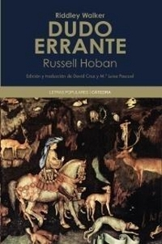
Si hay una editorial que se ha ganado a pulso el respeto de sus lectores gracias a la calidad de sus contenidos y al enfoque crítico de sus ediciones, esa es Cátedra. Con más de cien novedades anuales, se ha dedicado, desde 1973, a producir libros de todo tipo, distinguiéndose siempre por el cuidado con el texto y el mimo por las letras. Es, tal vez, una editorial “de fondo”, es decir, una marca que produce todos esos libros que hemos necesitado alguna vez, bien como consulta o bien como lectura obligada, en ediciones económicas de formato y diseño sencillo. Cátedra ofrece el fondo de armario de nuestra biblioteca, los vaqueros y camisetas del mundo del libro.
Pero esta apreciación no es del todo cierta. Cátedra, aunque sea conocida por prólogos y anotaciones infinitas, en ocasiones más largas que la propia obra publicada, lleva un tiempo ampliando sus colecciones y multiplicando sus ramas. Y ahora anuncia la inauguración de una colección de literatura popular.
¿Qué es lo que espera uno ante la definición literatura popular? ¿Literatura del pueblo? ¿Éxitos comerciales no reconocidos por la crítica? ¿Obras que han ilustrado la infancia de muchos de nosotros sin la pátina del canon? Al conocer los contenidos programados para la colección, parece ser que literatura popular hace referencia a los subgéneros, a los clásicos de novela que pertenecen a géneros denostados a lo largo de los años. Se refiere, en definitiva, a la fantasía, al terror y a la ciencia ficción.
Cierto es que la propuesta incluye títulos propios de literatura pulp procedente de todo el siglo XX, a los BEM de otro tiempo que en España nunca pudimos disfrutar con traducciones ni ediciones correctas. Pero también incluye obras de calidad más que demostrada, que escapan desde hace años del círculo de lo kitsch, de lo mediocre, de lo popular. Hablo de Stanislaw Lem o de Lovecraft, cuya inclusión en la selección de Cátedra no responde a un criterio de popularidad, sino al simple hecho de pertenecer al género especulativo. Cátedra asegura que lo que implica esta colección es lanzar preguntas al canon literario, al orden establecido, y lo hace denominando como popular a un conjunto de obras que se distinguen claramente por el género, no por su calidad canónica, menospreciando en cierta manera la validez de la obra de ficción especulativa como entidad propia, estableciendo hasta sus títulos de mayor prestigio como literatura de los márgenes. Por otro lado, y con independencia de nombre y definiciones, a veces tan perjudiciales, es de agradecer la posibilidad de contar con estas obras, muchas de ellas sólo disponibles en ediciones de baja calidad (o directamente no disponibles). Y es de agradecer también que el prestigio asociado a Cátedra pueda vincularse a algunas obras de valía demostrada, llámense populares, o como quieran definirlos, con sus correspondientes anotaciones y estudio crítico.
Eso sí, no son los primeros ni los únicos interesados en dignificar la literatura del pueblo. En el Facebook de Valdemar, editorial especializada en la denominada “cultura popular”, la respuesta no se ha hecho esperar:
En Valdemar llevamos años haciendo precisamente eso que tanto preconizan (…). Dicen que son los primeros en prestigiar la literatura popular y patatín patatán… Valdemar no existe, queridos amigos, los libros que tenéis en casa son una alucinación…
Entre mafias anda el juego (II): Gomorra
Sun, 20 Nov 2011 07:00:58 +0000
El libro de Roberto Saviano titulado Gomorra, y la posterior película homónima dirigida por Matteo Garrone, fueron una bofetada para todos los que tenían una visión idealizada y hasta cierto punto “romántica” de la mafia italiana. Y es que la Camorra, la versión napolitana de la mafia, poco o nada tiene que ver con la [...]
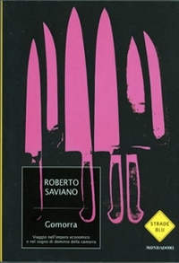
El libro de Roberto Saviano titulado Gomorra, y la posterior película homónima dirigida por Matteo Garrone, fueron una bofetada para todos los que tenían una visión idealizada y hasta cierto punto “romántica” de la mafia italiana. Y es que la Camorra, la versión napolitana de la mafia, poco o nada tiene que ver con la Cosa Nostra siciliana, que ha sido, en su vertiente estadounidense, la que más éxito ha tenido en literatura y cine, y la que nos resulta más conocida.
Sin embargo, la Cosa Nostra no es ni de lejos la mayor organización criminal italiana. La Camorra napolitana tiene una mayor importancia tanto cuantitativa como cualitativa: son muchos más los delincuentes vinculados a la Camorra, y comparativamente los napolitanos mueven muchísimo más dinero anualmente que los sicilianos. Algo parecido ocurre con la ´Ndrangheta, la organización mafiosa propia de Calabria, casi desconocida fuera de Italia pero de importancia capital en toda Europa, ya que probablemente más de la mitad de la cocaína que entra al continente pasa por sus manos (o más concretamente por los puertos que la ´Ndrangheta controla), por mucho que se hable en los medios de comunicación de que es España el lugar de llegada desde Sudamérica (especialmente Colombia pero también Ecuador o Bolivia) de los principales cargamentos de esta droga. Hasta ahora sólo un libro -‘Ndranghetta, de Francesco Forgione- nos ha hablado de la ´Ndrangheta o de la cuarta organización delictiva italiana, propia de Apulia, que es la Sacra Corona Unita, por lo que habitualmente, cuando hablamos de “mafia italiana”, lo estamos haciendo de la Cosa Nostra. Sin embargo, Gomorra hizo que de repente fuéramos conscientes de que la Camorra existe.
Ante el romanticismo que asociamos con la mafia siciliana, ya adherido al imaginario popular tras cuatro décadas de literatura y cine, y en el que destacan conceptos como el código de honor, la omertà, el respeto entre familias, etc., la Camorra descrita por Saviano y Garrone poco o nada tiene que ver. La imagen que todos tenemos de un don como Vito Corleone oponiéndose a participar en el tráfico de drogas y prefiriendo las actividades habituales de su clan (contrabando, juego ilegal, etc.), tampoco se corresponde con la realidad napolitana: la Camorra no está controlada por un puñado de familias que monopolizan toda la actividad delictiva de Nápoles y el resto de la Campania; estos clanes tampoco reclutan a jóvenes que poco a poco se van haciendo un nombre y van ascendiendo en el organigrama de la organización. Estas dos características no aparecen en la Camorra, en la que los clanes tienen un tamaño mucho mejor, facilitando una flexibilidad en las alianzas que poco o nada tiene que ver con la rigidez siciliana, y los jóvenes que hacen el trabajo sucio son más parecidos a mercenarios que a otra cosa, y pocas veces tienen la oportunidad real de incorporarse a la organización.
Las actividades propias de la Camorra tampoco tienen nada de románticas: podemos olvidarnos de los salones de juego ilegales, por ejemplo, y pensar sobre todo en la piratería (en especial de la confección textil) y en la “gestión” y almacenamiento de residuos. Este último tema ha generado un debate importante en Italia, ya que la acumulación de basura procedente de toda Europa en Campania ya supone un grave problema ambiental que las autoridades intentan solucionar (por ahora con poco éxito) por todos los medios.
Es difícil imaginar al Vito Corleone que todos tenemos en mente dirigiendo vertederos ilegales, pero la realidad, como casi siempre, poco tiene que ver con la ficción.
El flautista de Hamelin
Fri, 18 Nov 2011 07:00:57 +0000
Uno de los aspectos más interesantes de los cuentos clásicos es que por mucho que uno investigue, siempre parece haber una versión más antigua, una referencia anterior que podría significar el origen de lo narrado, transmitida de manera primero oral y luego escrita. Generalmente los cuentos tradicionales son elaboraciones de mitos, de unidades de sentido [...]
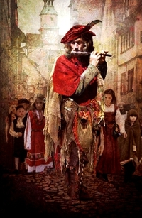
Uno de los aspectos más interesantes de los cuentos clásicos es que por mucho que uno investigue, siempre parece haber una versión más antigua, una referencia anterior que podría significar el origen de lo narrado, transmitida de manera primero oral y luego escrita. Generalmente los cuentos tradicionales son elaboraciones de mitos, de unidades de sentido creadas con finalidad didáctica o ejemplarizante. Funcionan como extractos de la memoria común, y suelen hacer hincapié en enseñanzas básicas y útiles, si bien éstas pueden perderse con el transcurrir del tiempo y el cambio histórico.
En el caso del muy conocido cuento del Flautista de Hamelín, parece ser que más que una finalidad didáctica la historia simplemente retrataría un hecho real. Lo complicado sería establecer cuál de las múltiples teorías al respecto sería la correcta, ya que la idea del flautista que embauca y secuestra a los niños de una ciudad como retribución podría provenir de varios orígenes diferentes, todas igualmente sugerentes y válidas. Por lo menos contamos con su lugar de procedencia, Hamelín, un pueblo de la Baja Sajona alemana. Según el historiador, teórico o estudioso de turno, podría tratarse de una narración alegórica de alguna plaga, por la que podrían haber muerto tantos infantes (la presencia, además, de las ratas a las que hipnotiza en primer lugar el flautista, sería aquí significativa); podría deberse a la salida masiva de niños en la famosa (y dudosa) Cruzada Infantil; o podría responder a un éxodo generalizado de jóvenes hijos no primogénitos que buscasen tierras propias, relacionado con la Ostliedlung, o colonización alemana del este de Europa. Según la versión, la narrativa es más o menos cruel: en algunas variantes los niños mueren, en otras viven para siempre en un lugar maravilloso, en otras regresan a su hogar después de pagar sus padres la deuda acumulada con el flautista. Aunque la moraleja de la historia parece clara (cumple tus promesas y paga lo convenido o vendrá un hombre extraño y se llevará a tus hijos), hay connotaciones e interpretaciones que no se nos escapan, y menos en nuestros días, en los que el lector ejerce un saludable ejercicio de sospecha. De este modo, ha habido quien ha querido ver referencias a la pederastia en la figura del flautista de vestimenta colorida que con tanta facilidad engatusa a los niños para llevárselos a una tierra prometida de juegos y dulces, dejando atrás a los lisiados y menos válidos, que son los que dan el aviso a los adultos de Hamelín.
Como con todo buen cuento, las versiones y adaptaciones han sido innumerables; seguramente la más conocida sea la recreación de los Hermanos Grimm, junto con los textos de Goethe y de Browning, pero se conservan manuscritos al respecto desde el siglo XIV. En una genial vuelta de tuerca, escritores como China Miéville (El rey rata) o Terry Pratchett (El asombroso Mauricio y sus sabios roedores) han elaborado versiones muy particulares del cuento tradicional, mezclándolo el primero con elementos contemporáneos, y realizando una variación humorística (en la que el flautista no es más que un timador asociado a un gato y a una panda de ratones inteligentes) el segundo.
Grandes plagios literarios (II)
Wed, 16 Nov 2011 07:00:46 +0000
Siempre ha habido autores reconocidos que se han aprovechado de otros peor avenidos para hacer el agosto. Con frecuencia se trataba de escritores que respondían a una demanda inmensa, obligados a producir una cantidad enorme de obras en un tiempo muy limitado. Del mismo modo que otros usaban negros literarios para hacerles el trabajo sucio, [...]
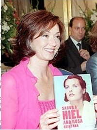
Siempre ha habido autores reconocidos que se han aprovechado de otros peor avenidos para hacer el agosto. Con frecuencia se trataba de escritores que respondían a una demanda inmensa, obligados a producir una cantidad enorme de obras en un tiempo muy limitado. Del mismo modo que otros usaban negros literarios para hacerles el trabajo sucio, muchos recurrían al uso indiscriminado de textos ajenos, generalmente pertenecientes a autores poco conocidos. Se sospecha que muchos de los grandes de la literatura hayan recurrido a esta treta, como podría haber ocurrido con Shakespeare. Con nuestro Lope de Vega, o con escritores mucho más actuales como Camilo José Cela, que ha sido acusado en varias ocasiones de utilizar ideas, personajes y argumentos de novelas ajenas. Recientemente ha sido llevado de nuevo a juicio (o más bien lo ha sido Planeta, ahora que el autor ha fallecido) por el supuesto plagio de la novela Carmen, Carmela, Carmiña (Fluorescencia) que fue presentada por Carmen Formoso al premio Planeta en el año 1994 y que parece ser que Cela “adaptó” para convertirla en la novela que resultó ganadora: La Cruz de San Andrés.
Otro caso aparte, pero también muy frecuente, es el plagio de traducciones. Es obvio que es mucho más complicado encontrar el plagio en una traducción, debido a que una parte importante de una traducción puede coincidir, por lógica, con la de otra persona. Es precisamente en las omisiones y en los fallos donde puede pillarse al traductor con delito, ya que éstas son mucho más fáciles de encontrar y denunciar. Y sí, hay plagiadores tan torpes que copian hasta los errores, sin molestarse en revisar su trabajo de copia, como ha aprendido a base de escándalo la periodista y presentadora Ana Rosa Quintana, al convertirse en el máximo exponente del plagio literario en nuestro país con su obra Sabor a hiel, que Planeta no tuvo más remedio que retirar del mercado al encontrarse párrafos completos copiados de manera íntegra de escritoras conocidas como Danielle Steel y Ángeles Mastretta. Quintana mantiene que fueron textos insertados por un colaborador y que no tuvo nada que ver con su propia labor autorial, a diferencia de Lucía Etxebarría, que ante las denuncias por plagio en su libro Ya no sufro por amor, declaró a la prensa que esperaba que la acusación de plagio disparase las ventas de su libro. Aunque Etxebarría se ha defendido siempre de las acusaciones de esta naturaleza que ha recibido a lo largo de su carrera recurriendo al socorrido argumento de la intertextualidad artística, dudo que cualquier teórico o crítico estaría dispuesto a utilizarla de ejemplo al hablar de la angustia de las influencias que menciona Harold Bloom o de las teorías polisistémicas de Even-Zohar. Hasta la interliterariedad tiene un límite.
Grandes plagios literarios (I)
Mon, 14 Nov 2011 07:00:02 +0000
En nuestro tiempo, hablar de plagio es hablar de una práctica ilegal, deshonrosa y socialmente vilipendiada. En una época en la que, por lo menos en lo superficial, se concede importancia a la originalidad, el copiar e imitar, sobre todo cuando se hace por intereses económicos, es uno de los pecados más graves del escritor. [...]
En nuestro tiempo, hablar de plagio es hablar de una práctica ilegal, deshonrosa y socialmente vilipendiada. En una época en la que, por lo menos en lo superficial, se concede importancia a la originalidad, el copiar e imitar, sobre todo cuando se hace por intereses económicos, es uno de los pecados más graves del escritor.
Por supuesto esto no siempre ha sido así. La consideración del plagio varía de un periodo histórico a otro, del mismo modo en que cambia su percepción de una cultura a otra. En países como China, por ejemplo, las obras literarias tardaron bastante en comenzar a firmarse, y aun cuando se firmaban, sus obras con frecuencia eran compilaciones de textos de otros autores. Esto ha ido cambiando con el tiempo, pero sigue conociéndose como una cultura en la que la imitación puede ser una forma de halago, y un recurso práctico, tanto en lo artístico como en lo comercial. Es irrelevante hablar de plagio como tal en circunstancias como estas, en las que el concepto de autoría es totalmente diferente de nuestra perspectiva occidental contemporánea. Y en la propia Occidente, que arruga la nariz ante las imitaciones de cualquier calibre, hubo un tiempo en que era práctica común tomar “prestados” textos ajenos para firmarlos con el nombre propio. Un recurso común era presentar como obras propias traducciones de clásicos latinos y griegos (es posible que Gonzalo de Berceo, por ejemplo, no escribiera una sola palabra de su propia creación en toda su obra). Esto, lejos de ser perjudicial, se consideraba positivo, ya que la mención de fuentes otorgaba prestigio y credibilidad al texto.
Tras la Edad Media y con la progresiva revolución cultural del Humanismo, el constante préstamo textual entre artistas que viajaban y se nutrían del canon de otros países fomentaba el plagio y la copia, pero por otro lado se engrandecía la figura del autor, que comenzaba a valorarse como individuo. Es casi imposible establecer la diferencia en esta época entre lo que era una copia directa (ya fuera en el mismo idioma o a través de la traducción) y un simple cúmulo de influencias. Sin algunas de estas imitaciones, no dispondríamos del necesario tráfico de ideas, estilos y formas que compondrían un interesante Renacimiento y un glorioso Barroco en el ámbito de la literatura española. Sin embargo, poco a poco, la fama y gloria alcanzada por el escritor hacía que este se mostrase más celoso de sus creaciones, y serían más frecuentes los enfrentamientos entre autores por motivos de imitación, una vez la literatura comenzase a establecerse como negocio más o menos rentable para aquel que la practicaba. De hecho, la legendaria rivalidad entre dos grandes de nuestra lengua, Francisco de Quevedo y Luis de Góngora, parece haberse originado por el uso indebido del primero de la forma de escribir del segundo, ya que utilizaba su estilo y léxico para ridiculizarlo. Esta peculiar forma de plagio, ofensiva y burlona, otorgó fama al escritor y despertó la ira de Don Luis, fomentando una enemistad que se tradujo en una de las batallas literarias más completas y productivas de la historia de la literatura.
El suicidio, un problema oculto
Sat, 12 Nov 2011 07:00:11 +0000
Cada año, según el INE, se suicidan en España unas 3500 personas, cifra que podría ser más alta si hacemos caso a los datos de la Sociedad Española de Psiquiatría Legal, que calcula una tasa de suicidio de de 10,5 por cada 100.000 habitantes, lo que nos daría un total de 4500 muertes. Sin embargo, [...]
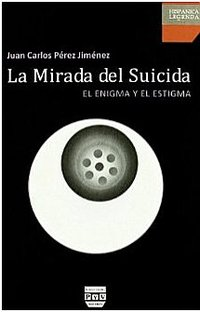
Cada año, según el INE, se suicidan en España unas 3500 personas, cifra que podría ser más alta si hacemos caso a los datos de la Sociedad Española de Psiquiatría Legal, que calcula una tasa de suicidio de de 10,5 por cada 100.000 habitantes, lo que nos daría un total de 4500 muertes. Sin embargo, y pese a ser una cifra más que considerable (estaríamos hablando de más de doce muertes al día), los medios de comunicación mantienen un pacto tácito para obviar el tema. Así, es casi imposible encontrar información en la prensa acerca de suicidas, a no ser en el caso de personajes famosos.
En el caso concreto español, tenemos una lista bastante poblada de escritores que recurrieron al suicidio, como por ejemplo el hispano-mexicano Pepe Alameda, el granadino Ángel Ganivet (que acabó con su vida tirándose al río Dvina, en Letonia, después de haber sido salvado de otra intentona), el también granadino Javier Egea (uno de los más importantes poetas de finales del siglo pasado), José Agustín Goytisolo, Mariano José de Larra, el historietista Josep Coll o Felipe Trigo. No es casualidad que sean todos hombres: aunque según los datos manejados por las instituciones las mujeres intentan más quitarse la vida, la mayoría de los suicidas son hombres (triplican el número de muertes de las mujeres) debido a que utilizan métodos más contundentes. Así, mientras que las mujeres prefieren la ingestión de pastillas o cortarse las venas de las muñecas, sistemas ambos muy proclives a no lograr su cometido, los hombres suelen saltar al vacío, conducir de forma temeraria o utilizar armas de fuego. Sin embargo, el dato es escalofriante: el suicidio es la primera causa de muerte en España en mujeres entre 30 y 34 años.
Sin embargo, y como ya hemos dicho, los medios de comunicación suelen obviar el tema del suicidio excepto en casos muy concretos. La razón es bastante lógica: algunos estudios han demostrado que la publicidad de este tipo de casos genera un “efecto llamada” y dispara el número de intentonas… y desgraciadamente también el de muertes. En países con tasas de suicidio mucho más altas que en España, caso de los Países Escandinavos o Japón (por poner los dos ejemplos típicos), saben de sobra de esto, y aconsejan hablar lo menos posible del tema. La razón podría ser, entre otras, que no todos los suicidas buscan la muerte per se, si no también notoriedad. El silencio en los medios de comunicación anula esta notoriedad buscada, lo que se traduce en menos suicidios.
El sociólogo Juan Carlos Pérez es el autor de La mirada del suicida. El enigma y el estigma. La edición de este libro ha conseguido, cosa rara, repercusión mediática. Sorprende ya no sólo por la temática, sino porque el libro no ha sido publicado por ninguna editorial de las que suelen copar las páginas culturales de la prensa.
Según Pérez, nueve de cada diez suicidas lo son debido a enfermedades mentales, particularmente las depresiones. Menos de uno de cada diez se suicida por otras cuestiones: adicciones, enfermedades crónicas, aislamiento, etc. Y el mayor factor de riesgo, como no podía ser de otra manera, es el haber tenido anteriormente otros intentos de suicidio. Las dos etapas vitales en las que hay mayor incidencia del suicidio son la adolescencia y la vejez, algo que también hay que considerar.
La mirada del suicida. El enigma y el estigma está ya en las librerías españolas, y previsiblemente también verá pronto la luz en México, dado que la editorial Plaza y Valdés, la responsable de su edición, mantiene un doble catálogo entre ambos países.
Dónde están los editores del siglo XXI
Thu, 10 Nov 2011 06:54:51 +0000
Acaba de salir el informe del Observatorio de Piratería y Hábitos de Consumo de Contenidos Digitales y, con todo el revuelo que se ha montado, no estaría más tratar de analizar cuál es la situación de la literatura. Digo literatura y no ebook o libro electrónico porque, a fin de cuentas, estamos hablando de eso, [...]
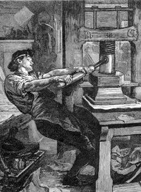
Acaba de salir el informe del Observatorio de Piratería y Hábitos de Consumo de Contenidos Digitales y, con todo el revuelo que se ha montado, no estaría más tratar de analizar cuál es la situación de la literatura.
Digo literatura y no ebook o libro electrónico porque, a fin de cuentas, estamos hablando de eso, de literatura, con independencia de su formato. Lo cierto es que a medida que el parque de ereaders y tablets aumenta, crece también el número de libros disponibles sin pasar por caja. Las declaraciones del director ejecutivo de la Federación de Gremios de Editores de España, Antonio María Ávila, no tienen desperdicio, demostrando que todas las indicaciones que se iluminaban como luces de alarma hasta llegar aquí han sido ignoradas y que, además, parece que va a seguir así.
Durante mucho tiempo se ha retrasado la aparición de las novedades en ebook, aunque se está trabajando ahora en ese camino, todavía hay cierto desfase. Resultado, las novedades aparecen por otros canales, y gratis. No hace falta que alguien rompa la débil protección del DRM de los libros electrónicos, no, la gente prefiere comprar un libro y pasarlo por el escáner y maquetarlo ellos mismos. Eso nos lleva a un segundo punto: ha pasado lo que hace un par de años ya decíamos en Lecturalia y muchos no se creían, los usuarios han aprendido a maquetar y ya lo hacen mejor que algunas editoriales de postín.
Habría que explicarle entonces al señor Ávila la situación a la que han llegado, una en la que sus asociados ofrecen productos caros, de manera tardía y, en ocasiones, de peor calidad que la que unos aficionados pueden hacer en su casa. Un caso a todas luces peor, incluso, que el de la industria de la música o el cine, que sí pueden apelar a la mejor calidad y el valor añadido de sus productos.
En cuanto a lo de que las editoriales se «irían de España», desconozco a qué lugar del pasado podrían viajar, pero lo que está claro es que en España se seguiría escribiendo y se seguiría leyendo, no sé de qué modo y en qué formato, pero lo que vendría a demostrar es que el papel decimonónico de la industria editorial -eso incluye a las distribuidoras- es cada vez menos necesario a medida que nos adentramos en la segunda década del siglo XXI.
Esperemos que los consejeros que se mueven alrededor de los editores recapaciten. Es muy difícil frenar una revolución tan social como tecnológica en la que habrá que establecer unas nuevas reglas de mercado y de relación entre autores, editores y lectores; pero lo que debería empezar a quedar claro para todos es que si hay alguien que puede sobrar en esa ecuación no son precisamente creadores o consumidores.
NaNoWriMo 2011: Café, por favor
Tue, 08 Nov 2011 06:54:03 +0000
El NaNoWriMo (National Novel Writin Month) es una original apuesta creativa iniciada en Estados Unidos -y abierta a todo el mundo- en la que cada año se invita a cualquier escritor para que se lance a la emocionante aventura de escribir una novela de 50000 palabras durante el mes de Noviembre. Hay que tener en [...]
El NaNoWriMo (National Novel Writin Month) es una original apuesta creativa iniciada en Estados Unidos -y abierta a todo el mundo- en la que cada año se invita a cualquier escritor para que se lance a la emocionante aventura de escribir una novela de 50000 palabras durante el mes de Noviembre.
Hay que tener en cuenta que no es un concurso, que nadie se apunte al NaNoWriMo pensando que va a ganar algo más allá del sentimiento de haber finalizado una maratón mental. Porque en este certamen el único enemigo es uno mismo, el sueño y la falta de tiempo. Aunque esas 50000 palabras queden diluidas en los 30 días de noviembre, estamos hablando de casi 1700 palabras al día, algo que parece poco pero que si, por cualquier motivo, pierdes un par de días hace que el montón de palabras restantes se haga, de repente, mucho más grande.
En realidad tampoco hay que escribir una novela. Los hay que se dedican al cuento y van formando una antología, o los que escriben un ensayo. Eso sí, si piensas en la poesía más te vale tener un cerebro portentoso para rellenar las 50000 palabras a base de versos. Eso sí que parece un desafío más allá de lo humano.
Tampoco espera nadie que el resultado tenga que ser una joya de la excelencia literaria. Esto, como ya hemos dicho, es un maratón. Nadie piensa que haya que correrlo al sprint manteniendo una postura de supermodelo, lo importante es acabar, llegar a la meta con esos miles de palabras terminados en el ordenador. Todo lo demás son detallitos y, además, también está la increíble experiencia de compartir la carrera con otros escritores tan locos como tú. El año pasado la cifra de participantes llegó a 200000 personas. Impresionante, ¿verdad?
Este año, por primera vez, y tras enterarme tarde el año pasado en Lecturalia, he decidido apuntarme. Tenía por la cabeza una historia tan loca que sólo podía cobrar vida en el cafeínico mundo NaNoWriMo, en el que cualquier momento y lugar son buenos para arrancar unas palabras del contador con el que te enfrentas, en mi caso, cada noche. Por ahora no ha ido bien la cosa y me he saltado unos días… tendré que doblar mis cafés para ponerme al día y llegar al día 30 con la cabeza bien alta. Y si no… no hay problema, el año que viene volveré a intentarlo. Es cuestión de orgullo literario.
Más información: NaNoWriMo